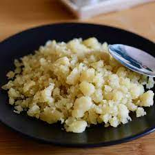

Inicio
Reviro

Descripción
Receta básica, en 20 min. te la cocinás.
Ingredientes
harina
agua
huevos
sal
Pasos
preparar 500g. de harina
meterle 250ml de agua
salar a gusto
amasado tipo arenado
meter a la olla y conicar por 10 min.
a comerla